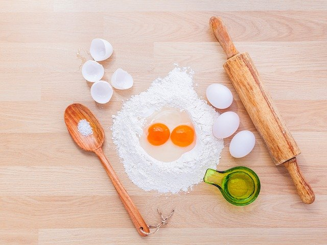
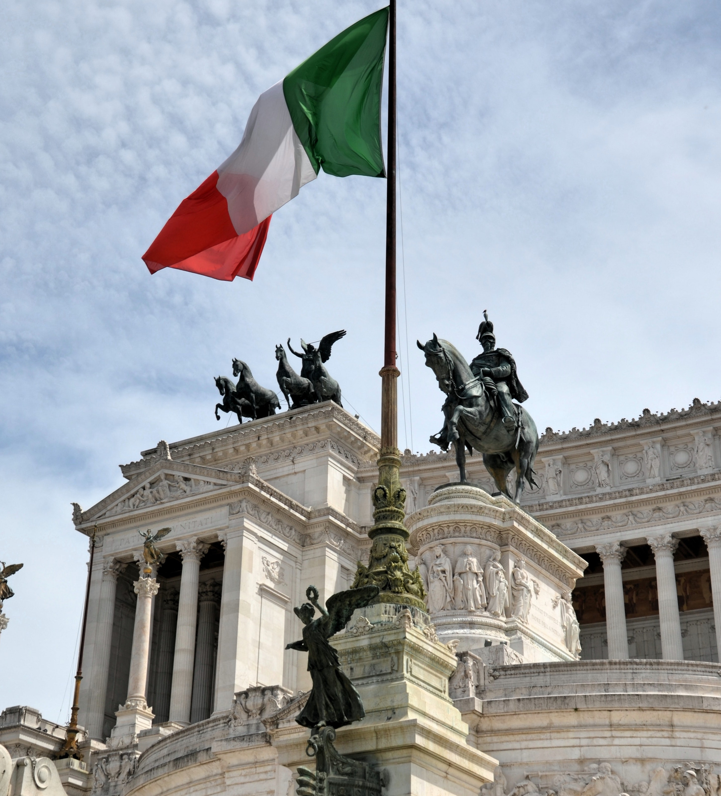
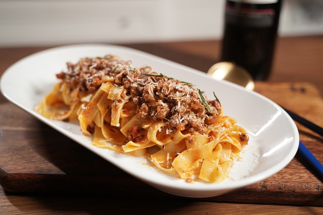
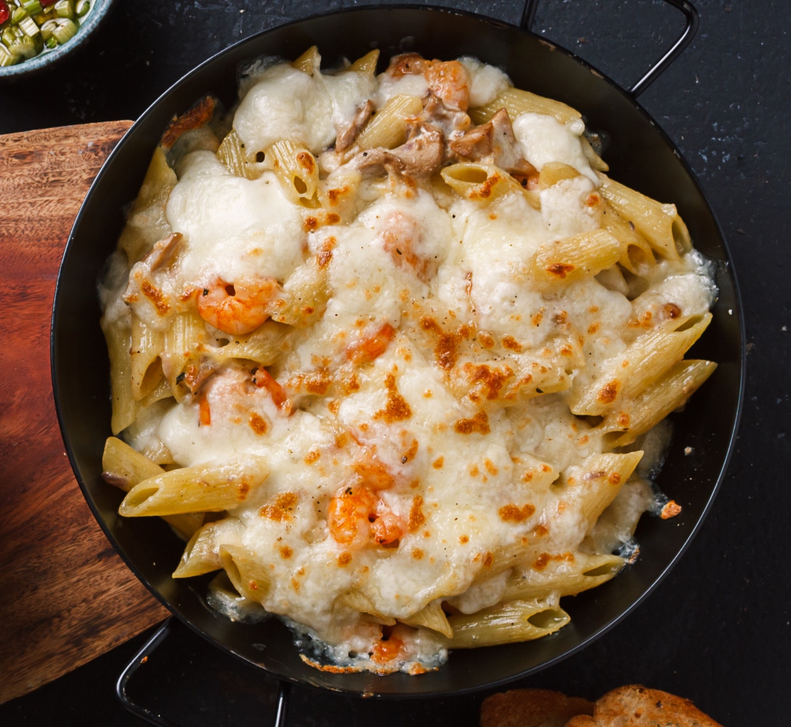
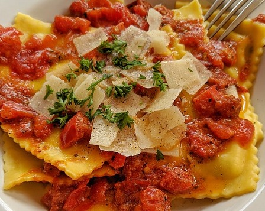
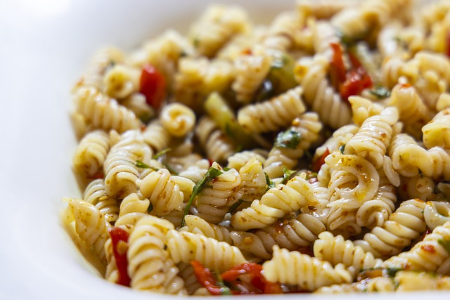

Welcome pasta lovers!
Pasta is a beloved food around the world, and this page is here to help you learn fun facts and information about pasta! Click the tabs above so that you can explore all the PASTABILITIES out there!
The image above is from: Pixbay
Although most people associate pasta with the country of Italy, noodles did not get their start there. The earliest tracings of noodles take us back to China. While there is no definitive origin story, it is widely believed by historians and archaeologists that the noodle got it's start in Asia. How noodles left Asia and made their way to Europe is also not entirely clear in the history books. The story of Marco Polo bringing it from China to Italy has mostly been debunked. One common and likely theory is that “nomadic Arabs are responsible for bringing early forms of pasta westward”(Tori Avery). Noodles have been traced back to so many countries in ancient history, that it is difficult to find a clear timeline.

Once noodles reached the Mediterranean, they made their way to Italy, and soon became a part of the country’s culture. Italians developed and put their twist onto noodles to make pasta. Pasta is sort of a subdivision of the noodle, because “pasta is generally used to describe traditional Italian noodles, which differentiates it from other types of noodles around the world. Pasta is made from unleavened dough consisting of ground durum wheat and water or eggs. The use of durum wheat sets pasta apart from other forms of noodles” (Tori Avery). Once in Italy, pasta grew to prominence, and many regions developed dishes that complimented their local vegetables and cuisine. Pasta was brought to America by Spanish settlers and is now favorite food of many worldwide.
Italians cannot take credit as the inventors of the noodle, however, they took the recipe and built on it to make pasta. In it's many shapes and sizes, over time, pasta has become ingrained into Italian culture.
Information for this section is from: Tori Avery& Delallo
Although there are many different ways to group pasta,
here are the five basic groups:
The shape that requires a fork AND spoon. If you can twirl it, you're probably eating long pasta! Pasta shapes that fall into this category are long and either skinny, flat, or tubular.
According to Escoffier examples of shapes include: "Angel hair, fettuccine, fideo, fusilli, lasagna, lasagne, linguine, mafalda, pappardelle, reginette, spaghetti, tagliatelle, thin spaghetti, vermicelli."
Click through the pictures to the right to see: Fettuccine, Angel Hair, Spaghetti, & Pappardelle
Image order and source: Fettuccine & Angel Hair & Spaghetti & Pappardelle
Like the name of the group implies, tube pasta has a hollow and tubular shape that allows for thicker sauces to fill them. My personal favorite pasta, Rigitoni, falls into this category!
According to Escoffer some shapes that fall into this category are: "Bucatini, casarecce, cavatappi, elbow, manicotti, penne, penne mostaccioli, penne rigate, pipe rigate, pipette rigate, riccioli, rigatoni, tortiglioni, tubini, ziti."
Click on the image to the right to see: Penne, Rigatoni, Elbow, & Macaroni
This category has more of a variety in it's shapes. It is given the name of soup because these noodles are often featured in soups or soup-like sauces.
According to Escoffer some shapes that fall into this category are: "Acini de pepe, alphabet, ditalini, orecchiette, orzo, pastina."
Click on the image to the right to see: Galets, Alphabet, Orecchiette, & Orzo
Image order and source: Galets& Alphabet & Orecchiette & Orzo
Stuffed pastas are pastas with filling. The most traditional fillings are either cheese-based, meat-based, or vegetable-based.
According to Escoffer two pastas in this group are: "Ravioli, tortellini"
Click on the image to the right to see: Ravioli & Tortellini
Image order and source: Ravioli & Tortellini & Ravioli & Tortellini
Just like soup shapes, there is a lot of variety in this category. It features pasta that is often more fun and visually appealing for its shapes and design. However most of the pasta shapes in this group are lesser known.
Examples of this shape from Escoffer include: "Anelli/anellini, campanelle, cappalletti, cavatelli, conchiglie, egg noodles, farfalle, farfalline, gemelli, gigli, radiatori, rocchetti, rotelle, rotini, ruote, tripolini."
Click on the image to the right to see: Rotini, Rotelle, Farfalle, & Cavatelli
Information for this section is from: Escoffer
While pasta most certainly was not made in the United States, it is still a favorite food. The map above utilizes Google analytics research to provide the most searched pasta dish in each U.S state. It may be a shock to learn that squid ink pasta is the most popular in three states. However, it is no surprise that Fettuccine Alfredo takes the cake being most popular in fourteen states. Click on each state above and see if any of the dishes shock you!
1. Fafalle: Named after the Italian word for butterfly and resembling a bowtie, Farfalle is a favorite in the town of Lombardy in northwest Italy
2. Bucatini: Spaghetti's thicker cousin. Bucatini is a long noodle with a hole in the center, helping it pair well with most sauce types. It is native to the region of Lazio.
3. Penne: One of the most well-known shapes of pasta is home to Campania. It pairs well with thick sauces because of its large hole in the middle, also making it well suited for cheesy pasta bakes.
4. Orecchiette: Native to Italy's southeast region of Puglia, and of my personal favorites, Orecchiette translates to "little ears". However I always refer to it as little hats because that's what it resembles to me! You will often see it paired with broccoli rabe.
5. Ziti: Similar to Penne but with flat edges and no ridges. Most people recognize Ziti in the form of baked Ziti, a baked pasta dish filled with sauce and cheese. It is regional to the tip of the boot of Italy; Sicily!
6. Gigli: One of the prettiest pasta shapes, Gigli's name means lily in Italian. It is home to the central region of Tuscany!
Click through the images below to see pictures of each pasta! The order goes: Farfalle, Bucatini, Penne, Orecchiette, Ziti, and Gigli.
Information for this section and pictures are from: Culture Trip , Spoon University , Farfalle , Bucatini , Penne , Orecchiette , Ziti & Gigli
You can serve any kind of pasta with whatever sauce you want; however, certain pasta shapes are designed to best capture and pair with certain sauces. So, if you are looking for a more thoughtfully planned pasta dish, here is the general consensus:

-Long pasta: long pasta can be broken up into a few categories, long & thin, long & flat, and long & tube. Each category works best with different types of sauce.
- Thin: Is best complemented by a lighter sauce. This can be oil or cream based, such as an oil and garlic sauce or parmesan cream sauce, or tomato sauce.
- Flat: A rule of thumb: the wider the noodle, the thicker the sauce can be. Wide noodles like pappardelle are often served with a Bolognese, whereas thinner varieties pair well with cream based or seafood sauces. Examples include Fettucine Alfredo, and Linguine with Clams.
- Tube: Pasta like Bucatini and other long tube pastas have a hole in the middle, making the hollow center perfect for filling with sauce. Since the tube is so small, it pairs better with thinner sauces such as oil and garlic, light cream sauces, and carbonara so that they can fill the center.

-Tube pasta: Pastas such as Penne, Rigatoni, Ziti and more (check the pasta groups section for more examples). Have a hole in the middle allowing them to be filled with sauce. Smaller tubes like penne and ziti work better with a creamy sauce, vodka sauce, or pesto. Bigger tubes like rigatoni can capture a chunkier sauce such as a meat sauce, such as ragu, or pair it with vegetables. According to the food network “If the pasta name includes the word "rigate," the pasta shape will include ridges, which make it easier for sauces like pesto to cling to the pasta.”(The Food Network). Making penne rigate the perfect pasta for a pesto sauce. Tube pastas also are great for baked pasta dishes such as baked ziti.

-Stuffed pasta: Filled with flavor, stuffed pastas such as Ravioli and Tortellini don’t require a hearty sauce. A light oil and garlic, cacio e pepe, tomato, or brown butter and sage pairs nicely with Ravioli. Tortellini works well with a creamy cheese sauce. Often the sauce that pairs best with stuffed pasta depends on the pastas filling. Typically, a Ravioli filled with vegetables such as butternut squash is complemented by a brow- butter and sage sauce, where a meat filled Ravioli is paired with a tomato sauce.

-Shaped pasta: Although pretty, shaped pastas are made that way for a reason. Their groves and ridges are “ideal for capturing sauces with small bits of finely chopped ingredients, such as pesto or crumbled sausage”. (Eatly)..Gigli and rotini work well with a pesto sauce. Cavatelli pairs best with a meat sauce, or broccoli. The rule of thumb applies here also, the wider the groves, the heartier the sauce can be.
While there are too many pasta shapes and sauces to capture them all, just remember: the wider the pasta the thicker the sauce and you will be fine!
pasta tip: when you are cooking pasta, reserve a cup of pasta water and add it back to drained pasta when you add the sauce. The starch in the water helps sauce cling to the pasta.
Information for this section is from: Etaly , The Food Network & BBC
Pictures are from: Pappardelle , Linguine , Penne, Manicotti, Ravioli, Other Ravioli, Fusilli, Farfalle